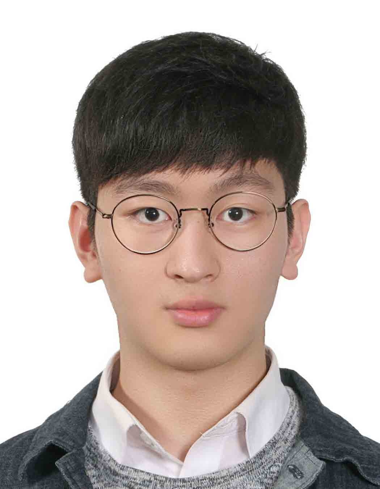

I am a Ph.D. student at the University of Science and Technology (UST), working at the Center for Genome Engineering, Institute for Basic Science (IBS) and Korea Institute of Toxicology (KIT), under the supervision of Dr. Bon-Kyoung Koo. My research focuses on developing various genetic tools such as SCON (conditional knockout strategy), ICON (reversible genetic tool) & Red2 system (fluorescence-based lineage tracing tool for clonal competition) in various model organisms, and stem cell biology, with a particular interest in hPSCs and brain organoids.
During my M.S. and military research personnel at KAIST, I mainly studied the role of RNA modifications in human brain development comparing with the mouse system, and developed a drug screening system with glioblastoma patient-derived organoids for drug repurposing. Also, I developed an efficient and tunable conditional knockout system (SCON) applicable in hPSCs and brain organoids.
CRISPR/Cas9-based genome editing, conditional knockout (SCON/ICON) system development
iPSC maintenance & differentiation, brain organoids, patient-derived GBM organoids
Human brain organoid models, m⁶A mRNA modification in neurodevelopment
scRNA-seq analysis, computational biology (R, Python)
Development of one-step, efficient, and tunable conditional/reversible gene knockout systems using SCON (Short Conditional Intron) and ICON (Inverse Short Conditional Intron) across various model organisms including hiPSCs, brain organoids, and other species. SCON is primarily applied in basic science research to dissect gene function, while ICON enables investigation of gene reversibility and serves as a preclinical model for studying disease reversibility and developing gene therapy strategies.
Utilizing patient-derived iPSCs and brain organoids to model neurological diseases. Development of predictive platforms for drug testing and repurposing, with a focus on glioblastoma (GBM) therapy.
Investigating the role of m⁶A mRNA modification in human brain development and axonogenesis, in collaboration with the Laboratory of Neural Stem Cell Biology at KAIST.
Director: Prof. Bon-Kyoung Koo
55 Expo-ro, Yuseong-gu, Daejeon 34126, Republic of Korea
Visit CGE Website →* equal contribution
m⁶A-mediated mRNA transport regulates axonogenesis in the developing brain
Nature Communications (Under review)
Patient-derived organoids as predictive models for drug testing and repurposing in glioblastoma therapy
In preparation
Discovery and verification of an inhibitor that suppresses glioblastoma by targeting syntenin PDZ domain
In preparation
One-step generation of conditional gene knockouts in various model systems
In preparation
CRISPR/Cas9 technologies to manipulate human induced pluripotent stem cells
Methods in iPSC Technology, 2021
Present and Future of Organoid Technology for Overcoming Glioblastoma
The Korean Brain Tumor Society Newsletter no.15, 2022
University of Science and Technology (UST)
Center for Genome Engineering, IBS
Advisors: Dr. Bon-Kyoung Koo · Dr. Ji-Hye Yun · Dr. Dong-Ho Woo
Korea Advanced Institute of Science and Technology (KAIST)
Major: Stem cell biology, Human pluripotent stem cell, Brain development
Advisors: Dr. Bon-Kyoung Koo (IBS) · Dr. Ki-Jun Yoon (KAIST)
Thesis: Development of an efficient and tunable conditional knockout system with SCON in iPSCs and Brain organoids
Ulsan National Institute of Science and Technology (UNIST)
Center for Genome Engineering, IBS
Advisor: Dr. Bon-Kyoung Koo
Project: Development of conditional and reversible genetic model with SCON/ICON in various species
Laboratory of Neural Stem Cell Biology, KAIST
Advisor: Dr. Ki-Jun Yoon
Project: The role of m⁶A mRNA modification in human brain development; Development of cKO system with SCON in iPSCs and brain organoids
Center for Genome Engineering, IBS
55 Expo-ro, Yuseong-gu
Daejeon 34126, Korea